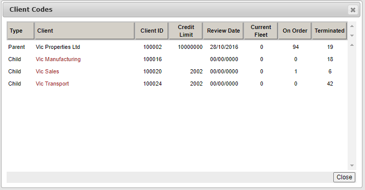

Parents and Children
From Help wiki
Main Page → Fleet / Administration / Clients → Contact → Parents and Children
Overview
To link children to a parent, edit each child and add the parent's client code into the "Parent Code" field.
Linking a parent record to it's children enables two things.
1. It provides a quick method of jumping between related client records using this pop-up screen
2. It creates a relationship between client records so that the stored Clients / Financiers Interest Rate Margin records of the parent can be mirrored for each child.
No ongoing user management is then required. Visit the Interest Rate Margin for more details about this feature.
The Parent-Child relationships are not used in any other system features.
Visit the Client Groups page for other relationship features.
Parent Code
The "Parent Code" field displays the "Client Code" of the Parent if the client you are viewing is a Child.
The Parent Code pop-up can be launched from a hyperlink on the "Parent Code" field.
The "Client" field in this screen is a hyperlink for all of the related entities.

Child Codes

The "Child Codes" field shows a count of the linked Child records if the client you are viewing is a Parent.
The Client Codes pop-up can be launched from a hyperlink on the "Child Codes" field.
The "Client" field in this screen is a hyperlink for all of the related entities.


{kind=link}
{kind=link}